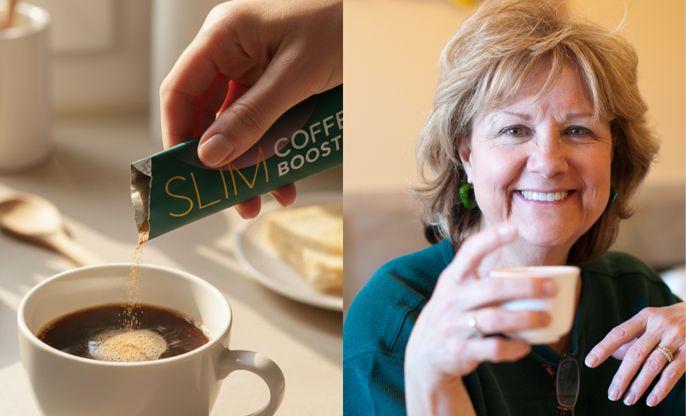
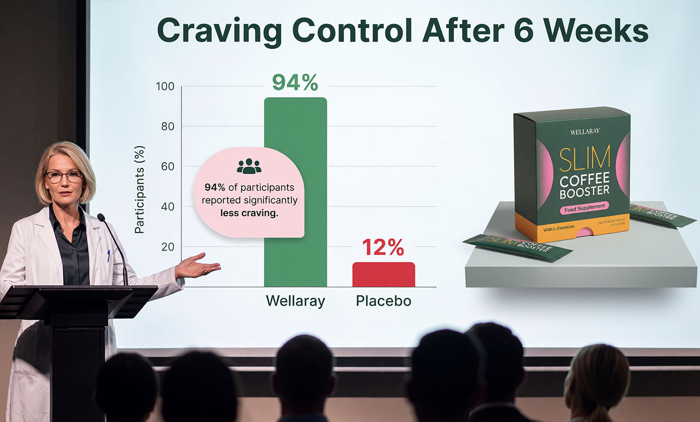
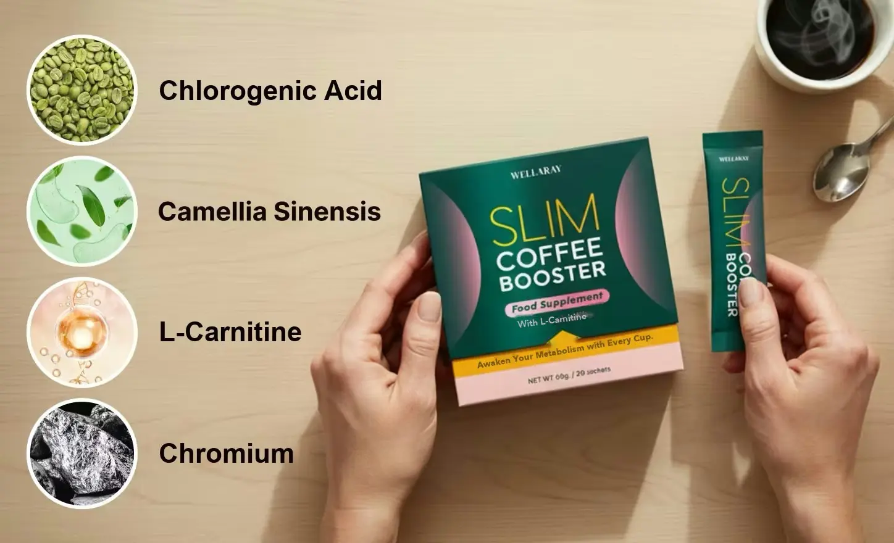
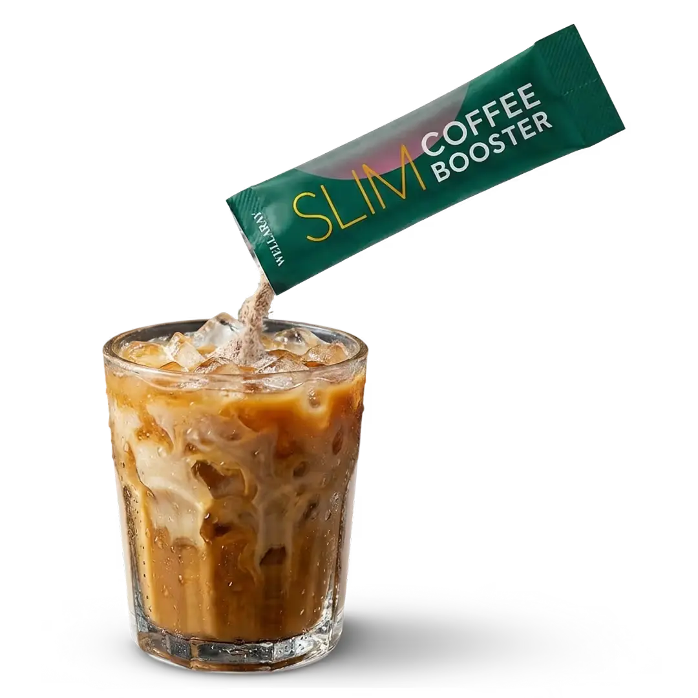
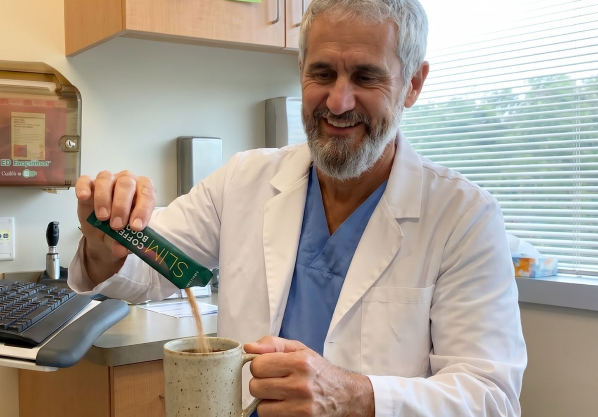
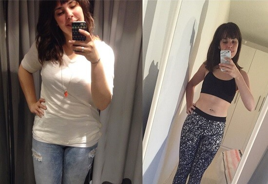

Cardiologists are stunned: this coffee booster actually helps burn fat
Just one cup a day – may help lift your energy, support digestion and promote overall wellbeing!

An interesting development is causing a stir: a German start-up has created an entirely plant-based method that can support weight loss alongside your daily cup of coffee. The formula may help promote wellbeing and is affordable for everyone. Individual results may vary.
In spring 2024 a talk at a major nutrition science conference caused a stir. Lena and Laura Baier, the founders of the start-up behind Wellaray, presented their method for supporting weight loss.
“We tried so many diets and none of them lasted,” says Laura. “We wanted to build something that could support weight loss, gently and naturally.”
Several leading nutritionists took an interest in the combination of natural ingredients that may support weight loss.
Exclusive interview with the founders of Wellaray
Smart Wellness Report: Laura, what inspired you to create a product for weight loss and detox?
Laura: “It started with our own experience. We tried countless diets and always ran into the same problem: either they were not sustainable, or they were so extreme that we could not stick to them. A lot of people are looking for natural alternatives.”
“We knew there had to be a better approach, one that supports the body instead of stressing it. So together with leading nutritionists we developed a coffee formula that can support weight loss, completely naturally.”
Smart Wellness Report: What makes Wellaray so special?
Laura: “Our method is based on a unique blend of 4 natural active ingredients that may help promote wellbeing and support the metabolism. That way healthy weight loss can be encouraged as part of a balanced diet.”

“That means the body can be supported in reducing weight as part of a calorie-reduced diet. At the same time the herbs it contains may promote general wellbeing.”
The science behind Wellaray
Why do so many people find losing weight hard? A range of factors such as diet and lifestyle can play a part.
Research suggests: Metabolism and digestion can influence how well you feel. This is exactly where Wellaray can help. With a blend of 4 natural active ingredients it may help support the metabolism and promote wellbeing as part of a healthy diet.
What is inside Wellaray – and how it works

✅ L-Carnitine – An amino acid derivative made by the body that may support energy metabolism.
✅ Green coffee extract – Rich in chlorogenic acid, a plant compound valued for its antioxidant profile.
✅ Chromium – Contributes to normal macronutrient metabolism and to the maintenance of normal blood glucose levels.
✅ Green tea extract – Rich in polyphenols, may help protect the cells and support general wellbeing.
This is built on natural ingredients that may support weight loss. Wellaray may help you reach your weight goals when it is used as part of a healthy diet.
How do you use Wellaray?

It could not be simpler:
- Brew your coffee exactly as you normally would.
- Stir in one sachet of Wellaray. The formula is tasteless and dissolves completely.
- Enjoy once a day – for noticeable results in just
a few weeks!

What do real customers say about Wellaray?
Many users report positive experiences with Wellaray. Some made progress within the first few weeks. Individual results may vary.
“I lost weight within two months and I feel comfortable in my own skin again,” reports one customer. Individual results may vary.
Results may varyAnother user, Thomas from Manchester, says: “I was sceptical, but I made progress in the first few weeks. I stirred the powder into my coffee every day and kept an eye on eating well.” Individual results may vary.
Studies show: participants report positive results
In one study, participants who used Wellaray as part of a calorie-reduced diet reported weight loss. Individual results may vary and depend on a number of factors, including diet and exercise.
Many participants reported weight loss after several weeks as part of a healthy, calorie-reduced diet and regular exercise.
In addition: many participants reported feeling more energetic, and some noticed an improvement in their digestion.
Reported experiences (after 10 weeks as part of a calorie-reduced diet):
✅ Weight loss reported – by many participants as part of a healthy diet.
✅ Improved wellbeing – reported by many
participants.
✅ More energy – reported by many
participants.
Individual results may vary. Weight loss occurs as part of a healthy, calorie-reduced diet and exercise.
Results after 30 days with Wellaray:
Results may vary

Results may varyResults after 90 days with Wellaray:
Results may vary
Results after 60 days with Wellaray:
Results may vary
Results may vary
Smart Wellness Report: How is Wellaray sold, and how much does it cost?
Laura: “Wellaray is not available in pharmacies or on the high street. We deliberately chose to sell direct, to avoid unnecessary middleman costs, so we can offer it at a fair price.”
The regular price for a 30-day pack is £59.99. For a limited time only you can get Wellaray at the exclusive promotional price of £29.99 – that is a saving of 70%! Take this one-off opportunity to try Wellaray completely risk-free and see the difference for yourself.
And the best part: we offer a 30-day money-back guarantee. If anyone is not satisfied, we refund the purchase price with no questions asked. Honestly though, returns are extremely rare, because our customers are delighted with the results!
Check availability (money-back guarantee) 👉Since it was featured on television in January, Wellaray has already sold out six times. The product is complex to manufacture and demand currently outstrips production.
Sources
https://pmc.ncbi.nlm.nih.gov/articles/PMC5480053/
https://pmc.ncbi.nlm.nih.gov/articles/PMC9376390/
Ingredients (example): L-Carnitine, green coffee extract (chlorogenic acid), chromium, green tea extract (Camellia sinensis)
This website is an advertisement and not a news article.
This product does not constitute medical advice and is not intended to diagnose, treat, cure or prevent any disease. It is not a substitute for medication or other treatment prescribed by a doctor or healthcare professional. If you are pregnant, breastfeeding, taking medication or under medical supervision, please consult a doctor or healthcare professional before use.
Results may vary. Weight loss occurs as part of a healthy, calorie-reduced diet and an exercise programme. Average weight loss is 1 to 2 lb per week.